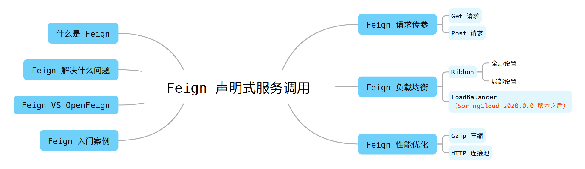

SpringCloud Feign声明式服务调用
学习目标

什么是Feign?
Feign 是 Spring Cloud Netflix 组件中的一个轻量级 RESTful 的 HTTP 服务客户端，实现了负载均衡和 rest 调用的开源框架，封装了 Ribbon 和 RestTemplate ，实现了 WebService 的面向编程接口，进一步降低了项目的耦合度。
接下来，我们一起看下 Feign 的一些基本认知：
- Feign 内置了 Ribbon ，用来做客户端负载均衡 调用服务注册中心的服务；
- Feign 其本身并不支持 Spring MVC 的注解，他有一套自己的注解，为了更方便的使用，Spring Cloud 孵化了 OpenFeign；
- Feign 是一种声明式、模块化的HTTP客户端（仅在 Consumer中使用）；
- Feign 支持的注解和用法可以在 https://github.com/OpenFeign/feign 中查看文档；
- Feign 的使用方式：使用 Feign 注解定义接口，调用这个接口，就可以调用服务注册中心的服务；
Feign 解决什么问题?
Feign 旨在使编写 Java HTTP 客户端变得更加容易，Feign 简化了 RestTemplate 代码，实现了 Ribbon 负载均衡，使代码变得更加简洁，也少了客户端调用的代码，使用 Feign 实现负载均很是首选方案。只需要你创建一个接口，然后在上面添加注解即可。
Feign 作为声明式服务调用组件，其核心就是: 像调用本地方法一样调用远程方法，无感知 HTTP 请求。
- 解决了让开发者调用远程接口就像调用本地方法一样的体验，开发者完全感知不到这是远程方法，更感知不到这是个 HTTP请求。无需关注与远程的交互细节，更无需关注分布式环境开发。
- 同 Dubbo一样，Consumer 直接调用 Provider 接口方法，而不需要通过常规的 Http Client 构造请求再解析返回数据。
Feign VS OpenFeign
OpenFeign 是 Spring Cloud 在 Feign 的基础上支持了 Spring MVC 的注解，比如： @RequestMapping 、 @PathVariable 等。
OpenFeign 的 @FeignClient 可以解析 SpringMVC 的 @RequestMapping 注解下的接口，并通过动态代理的方式产生实现类，实现类中做负载均衡并调用服务。
Feign 入门案例
Feign 的使用主要分为以下几个步骤：
- 服务消费者添加 Feign 依赖；
- 创建业务层接口，添加
@FeignClient注解声明需要调用的服务； - 业务层抽象方法使用 SpringMVC 注解配置服务地址及参数；
- 启动类添加
@EnableFeignClients注解激活 Feign 组件；
创建项目
无论服务消费者通过 Eureka 注册中心获取服务，或者 Ribbon 点对点直连模式都是可以直接使用 Feign 来实现的，所创建的项目的结构如下所示：

服务提供者
这里我们使用 bettytsai-system 模块作为服务的提供者提供服务接口，具体配置情况如下所示。
- 依赖配置
xxxxxxxxxx <project xmlns="http://maven.apache.org/POM/4.0.0" xmlns:xsi="http://www.w3.org/2001/XMLSchema-instance" xsi:schemaLocation="http://maven.apache.org/POM/4.0.0 http://maven.apache.org/xsd/maven-4.0.0.xsd"> <modelVersion>4.0.0</modelVersion> <artifactId>bettytsai-system-master</artifactId>
<parent> <groupId>io.knowledgehub</groupId> <artifactId>bettytsai</artifactId> <version>1.1.0</version> </parent>
<dependencies> <dependency> <groupId>org.springframework.boot</groupId> <artifactId>spring-boot-starter</artifactId> </dependency> <dependency> <groupId>org.springframework.boot</groupId> <artifactId>spring-boot-starter-web</artifactId> </dependency> <dependency> <groupId>org.springframework.boot</groupId> <artifactId>spring-boot-starter-logging</artifactId> </dependency> <dependency> <groupId>org.springframework.cloud</groupId> <artifactId>spring-cloud-starter-netflix-eureka-client</artifactId> </dependency> <dependency> <groupId>org.springframework.boot</groupId> <artifactId>spring-boot-starter-actuator</artifactId> </dependency> <dependency> <groupId>javax.inject</groupId> <artifactId>javax.inject</artifactId> </dependency> <!-- 我自己封装的私库依赖，未开放公共仓库，只是一些工具类 --> <dependency> <groupId>com.tsaiframework.boot</groupId> <artifactId>tsai-spring-boot-core</artifactId> <classifier>jar-with-dependencies</classifier> </dependency> </dependencies>
<build> <plugins> <plugin> <groupId>org.springframework.boot</groupId> <artifactId>spring-boot-maven-plugin</artifactId> <version>${spring-boot.version}</version> <configuration> <fork>true</fork> <excludes> <exclude> <groupId>org.projectlombok</groupId> <artifactId>lombok</artifactId> </exclude> </excludes> <includeSystemScope>true</includeSystemScope> </configuration> <executions> <execution> <goals> <goal>repackage</goal> </goals> </execution> </executions> </plugin> </plugins> </build></project>- 上下文配置
xxxxxxxxxxserver port9000spring application namebettytsai-system config # 是否启用配置数据处理旧模式 use-legacy-processingtrue datasource druid keep-alivetrue max-active20 initial-size1 min-idle1 max-wait360000 use-unfair-locktrue time-between-eviction-runs-millis60000 min-evictable-idle-time-millis30000 max-evictable-idle-time-millis180000 pool-prepared-statementstrue max-open-prepared-statements20 phy-timeout-millis15000 pxove-abandonedtrue pxove-abandoned-timeout180 test-while-idletrue test-on-borrowfalse test-on-returnfalse filter wall config multi-statement-allowtrue drop-table-allowfalse stat log-slow-sqltrue slow-sql-millis1000 merge-sqltrue web-stat-filter enabledtrue url-pattern/* exclusions/*.js,/*.gif,/*.jpg,/*.bmp,/*.png,/*.css,/*.ico,/druid/* session-stat-enabletrue profile-enabletrue stat-view-servlet enabledtrue allow reset-enablefalse login-usernamesoaadmin login-password123456 url-pattern/druid/* dynamic primarydb2 strictfalse datasource db2 typecom.alibaba.druid.pool.DruidDataSource driver-class-namecom.ibm.db2.jcc.DB2Driver urljdbcdb2//sjcj-mydb250000/USERIDcurrentSchema=USERID; usernamedb2inst1 passworddb2admin druid initial-size1 max-active20 min-idle1 max-wait360000 use-unfair-locktrue min-evictable-idle-time-millis30000 max-evictable-idle-time-millis180000 time-between-eviction-runs-millis60000 validation-queryselect current date from sysibm.sysdummy1 validation-query-timeout-1 test-on-borrowfalse test-on-returnfalse test-while-idletrue pool-prepared-statementstrue filtersstat,wall share-prepared-statementstrue mysql typecom.alibaba.druid.pool.DruidDataSource driver-class-namecom.mysql.cj.jdbc.Driver urljdbcmysql//sjcj-mysql3306/hr-sjcj?allowMultiQueries=true&characterEncoding=utf8&nullCatalogMeansCurrent=true usernameroot passwordhr123 druid initial-size1 max-active20 min-idle1 max-wait360000 use-unfair-locktrue min-evictable-idle-time-millis30000 max-evictable-idle-time-millis180000 time-between-eviction-runs-millis60000 validation-queryselect 1 validation-query-timeout-1 test-on-borrowfalse test-on-returnfalse test-while-idletrue pool-prepared-statementstrue filtersstat,wall share-prepared-statementstruelogging file name$spring.application.name-$server.port path/tlogs/$spring.application.nameeureka client # 指示此客户端是否应从 eureka 服务器获取 eureka 注册表信息。 fetch-registrytrue # 指示此实例是否应将其信息注册到 eureka 服务器以供其他人发现。在某些情况下，您不希望发现您的实例，而您只想发现其他实例。 register-with-eurekatrue # 指示从 eureka 服务器获取注册表信息的频率（以秒为单位）。 registry-fetch-interval-seconds30 # 将可用区映射到用于与 eureka 服务器通信的完全限定 URL 列表。 # 每个值可以是单个 URL 或逗号分隔的备用位置列表。 # 通常，eureka 服务器 URL 携带协议、主机、端口、上下文和版本信息（如果有）。 # 示例：https://ec2-256-156-243-129.compute-1.amazonaws.com:7001/eureka/ # 更改在运行时在 eurekaServiceUrlPollIntervalSeconds 指定的下一个服务 url 刷新周期生效。 service-url defaultZonehttp//admin123456@127.0.0.18761/eureka/,http//admin123456@127.0.0.18762/eureka instance # 标志表示，在猜测主机名时，应优先使用服务器的 IP 地址，而不是操作系统报告的主机名。 prefer-ip-addresstrue # 获取要向 eureka 注册的此实例的唯一 ID（在 appName 范围内） instance-id$spring.cloud.client.ip-address$server.port # 指示 eureka 客户端需要向 eureka 服务器发送心跳以指示它仍然处于活动状态的频率（以秒为单位）。 # 如果在 leaseExpirationDurationInSeconds 中指定的时间段内未收到心跳，则 eureka 服务器将从其视图中删除该实例， # 从而禁止流向此实例的流量。请注意，如果实例实现 HealthCheckCallback，然后决定使自身不可用，则实例仍然无法获取流量。 lease-renewal-interval-in-seconds10 # 必须与Docker容器名保持一致 hostname$spring.application.name# 度量指标监控与健康检查management endpoints web exposure includeinfo,shutdown endpoint shutdown enabledtruemybatis mapper-packagesio.knowledgehub.bettytsai.**.mappermybatis-plus mapper-locationsclasspath/mapper/*-mapper.xml global-config db-config id-typeassign_uuid configuration map-underscore-to-camel-casetrue log-implorg.apache.ibatis.logging.stdout.StdOutImpl部分配置是需要适配我自己封装的工具类才能用，但大部分不受影响。同时，我们只是为了测试 Feign 的功能，并不需要添加数据库的配置，涉及 ORM 框架的问题，我们暂时不做出解释。
- 创建服务接口
TestService.java
xxxxxxxxxxpublic interface TestService {
/** * 获取默认标签 * @return {@link String} */ String getDefaultLabel();}TestServiceImpl.java 主
xxxxxxxxxxpublic class TestServiceImpl implements TestService { public String getDefaultLabel() { log.info("===============> system-master...{}",Math.random()); return "hello eureka,I'm system master module."; }}为了后期区分出来负载均衡调用的差别，所以我们从服务写的测试服务接口改动了几个字，其他配置基本一致，我们再给出从服务的接口：
TestServiceImpl.java 从
xxxxxxxxxxpublic class TestServiceImpl implements TestService { public String getDefaultLabel() { log.info("===============> system-slave...{}",Math.random()); return "hello eureka,I'm system slave module."; }}TestController.java
xxxxxxxxxx(value = "/system/test")(WarningsConstants.SPRING_JAVA_AUTOWIRED_FIELDS_WARNING_INSPECTION)public class TestController {
private TestService testService;
(value = "/getDefaultString") public String getDefaultString() { return testService.getDefaultLabel(); }}测试服务接口
依次启动注册中心及服务，打开 http://127.0.0.1:8761/ 访问页面，具体所示如下：

调用服务接口，接口访问成功，具体如图所示：

服务消费者
到这里为止，我们的一系列准备工作基本完成，现在我们来一起通过简单的使用案例来学习下 Feign 。
- 依赖配置
xxxxxxxxxx <project xmlns="http://maven.apache.org/POM/4.0.0" xmlns:xsi="http://www.w3.org/2001/XMLSchema-instance" xsi:schemaLocation="http://maven.apache.org/POM/4.0.0 http://maven.apache.org/xsd/maven-4.0.0.xsd"> <modelVersion>4.0.0</modelVersion> <artifactId>bettytsai-demo-master</artifactId>
<parent> <groupId>io.knowledgehub</groupId> <artifactId>bettytsai</artifactId> <version>1.1.0</version> </parent>
<dependencies> <dependency> <groupId>org.springframework.boot</groupId> <artifactId>spring-boot-starter</artifactId> </dependency> <!--提供spring mvc一系列的注解支持 openfeign--> <dependency> <groupId>org.springframework.boot</groupId> <artifactId>spring-boot-starter-web</artifactId> </dependency> <!--依旧需要通过注册中心拉取服务列表--> <dependency> <groupId>org.springframework.cloud</groupId> <artifactId>spring-cloud-starter-netflix-eureka-client</artifactId> </dependency> <dependency> <groupId>javax.inject</groupId> <artifactId>javax.inject</artifactId> </dependency> <!--添加openfeign依赖--> <dependency> <groupId>org.springframework.cloud</groupId> <artifactId>spring-cloud-starter-openfeign</artifactId> </dependency>
<dependency> <groupId>com.tsaiframework.boot</groupId> <artifactId>tsai-spring-boot-core</artifactId> <classifier>jar-with-dependencies</classifier> </dependency> </dependencies>
<build> <plugins> <plugin> <groupId>org.springframework.boot</groupId> <artifactId>spring-boot-maven-plugin</artifactId> <version>${spring-boot.version}</version> <configuration> <fork>true</fork> <excludes> <exclude> <groupId>org.projectlombok</groupId> <artifactId>lombok</artifactId> </exclude> </excludes> <includeSystemScope>true</includeSystemScope> </configuration> <executions> <execution> <goals> <goal>repackage</goal> </goals> </execution> </executions> </plugin> </plugins> </build></project>- 上下文配置
xxxxxxxxxxserver port9004spring application # 应用名称 namebettytsai-demoeureka client # 指示此客户端是否应从 eureka 服务器获取 eureka 注册表信息。 fetch-registrytrue # 指示此实例是否应将其信息注册到 eureka 服务器以供其他人发现。在某些情况下，您不希望发现您的实例，而您只想发现其他实例。 register-with-eurekatrue # 指示从 eureka 服务器获取注册表信息的频率（以秒为单位）。 registry-fetch-interval-seconds30 # 将可用区映射到用于与 eureka 服务器通信的完全限定 URL 列表。 # 每个值可以是单个 URL 或逗号分隔的备用位置列表。 # 通常，eureka 服务器 URL 携带协议、主机、端口、上下文和版本信息（如果有）。 # 示例：https://ec2-256-156-243-129.compute-1.amazonaws.com:7001/eureka/ # 更改在运行时在 eurekaServiceUrlPollIntervalSeconds 指定的下一个服务 url 刷新周期生效。 service-url defaultZonehttp//admin123456@127.0.0.18761/eureka/,http//admin123456@127.0.0.18762/eureka instance # 标志表示，在猜测主机名时，应优先使用服务器的 IP 地址，而不是操作系统报告的主机名。 prefer-ip-addresstrue # 获取要向 eureka 注册的此实例的唯一 ID（在 appName 范围内） instance-id$spring.cloud.client.ip-address$server.port # 指示 eureka 客户端需要向 eureka 服务器发送心跳以指示它仍然处于活动状态的频率（以秒为单位）。 # 如果在 leaseExpirationDurationInSeconds 中指定的时间段内未收到心跳，则 eureka 服务器将从其视图中删除该实例， # 从而禁止流向此实例的流量。请注意，如果实例实现 HealthCheckCallback，然后决定使自身不可用，则实例仍然无法获取流量。 lease-renewal-interval-in-seconds10 # 必须与Docker容器名保持一致 hostname$spring.application.namelogging file # 日志文件名称前缀 name$spring.application.name-$server.port # 日志的存放路径 path/tlogs/$spring.application.name- 服务消费接口
DemoService.java
xxxxxxxxxxpublic interface DemoService {}DemoServiceImpl.java
xxxxxxxxxxpublic class DemoServiceImpl implements DemoService {}SystemService.java
xxxxxxxxxx// 声明需要调用的微服务模块("bettytsai-system")public interface SystemService { // 调用的微服务模块的指向接口是哪个 ("/system/test/getDefaultString") String getDefaultString();}DemoController.java
xxxxxxxxxx("/demo")(WarningsConstants.SPRING_JAVA_AUTOWIRED_FIELDS_WARNING_INSPECTION)public class DemoController {
private DemoService demoService;
private SystemService systemService;
("/test") public String getSystemString(){ // 直接调用 bettytsai-system 模块服务 return systemService.getDefaultString(); }}DemoMasterApplication.java
xxxxxxxxxx// 启动类主要是为了加这个注解public class DemoSlaveApplication { public static void main(String[] args) { ApplicationContext context = SpringApplication.run(DemoSlaveApplication.class, args); Environment environment = context.getEnvironment(); String port = environment.getProperty("server.port"); log.info(String.format(":::系统启动成功....端口号::: %s",port)); }}测试消费服务
访问注册中心页面，检查服务是否已经注册成功，具体如图所示：

调用服务 http://http://192.168.56.1:9004/demo/test 接口，成功访问，具体如图所示：

细心的人可能会发现，经过多次测试，会发现是轮询策略哦。关于负载均衡，我们将在后续章节学习。
Feign 负载均衡
Feign 既然封装了 Ribbon 自然而然也就具备了负载均衡的功能。默认采用轮询策略，那么如何切换负载均衡策略呢？与之前 Ribbon 的学习中的配置基本一致。
全局设置（Ribbon）
这里为了学习Ribbon负载均衡，所以我们还是统一将版本设置为 Spring Cloud 2020.0.0 之前的版本：
xxxxxxxxxx<properties> <!--...其他组件版本版本号不展示--> <spring-boot.version>2.3.3.RELEASE</spring-boot.version> <spring-cloud.version>Hoxton.SR12</spring-cloud.version> <spring-cloud-alibaba.version>2.2.7.RELEASE</spring-cloud-alibaba.version></properties>然后在启动类或者配置类中注入负载均衡策略对象。所有服务请求均使用该策略。
xxxxxxxxxxpublic IRule randomRule(){ IRule rule; // 轮询策略（默认） rule = new RoundRobinRule(); // 随机策略 // rule = new RandomRule(); // 权重轮询策略 // rule = new WeightedResponseTimeRule(); // 最少并发策略 // rule = new BestAvailableRule(); // 重试策略 // rule = new RetryRule(); // 可用敏感性策略 // rule = new AvailabilityFilteringRule(); // 区域敏感性策略 // rule = new ZoneAvoidanceRule(); return rule;}启动我们的消费者服务，我们通过多次访问接口 http://127.0.0.1:9002/test/test/test2 进行测试，可以看到控制台输出内容如下所示，由此可见，默认是采用的随机策略。

局部设置（Ribbon）
删除全局配置，然后修改配置文件，指定所调用的某一个服务的负载均衡策略。格式：服务应用名.ribbon.NFLoadBalancerRuleClassName
xxxxxxxxxx# 负载均衡策略# bettytsai-system 为所调用的服务名称bettytsai-system ribbon NFLoadBalancerRuleClassNamecom.netflix.loadbalancer.RandomRule启动我们的消费者服务，我们通过多次访问接口 http://127.0.0.1:9002/test/test/test2 进行测试，可以看到控制台输出内容如下所示，由此可见，默认是采用的随机策略。
替代配置（LoadBalancer）
随着微服务架构越来越流行，在不同服务器上运行多个服务变得越来越普遍。Ribbon 作为早期的客户端负载均衡工具，在 Spring Cloud 2020.0.0 版本之后已经被移除了，取而代之的是 Spring Cloud LoadBalancer，而且 Ribbon 也已经不再维护，所以它也是 Spring 官方推荐的负载均衡解决方案。
同时，Spring Cloud Balancer还有着一些其他的优势：
- 更好的兼容性：LoadBalancer就像一个全新的配件，它与Spring Cloud的其他组件搭配得更好。
- 支持响应式编程：现在编程界有一种新的编程方式叫做“响应式编程”，LoadBalancer能很好地支持这种现代编程风格。
- 易于使用和维护：LoadBalancer的设计易于拼装和修改，这对于开发者来说，维护和定制起来更加方便。
- 多功能：LoadBalancer有很多内置功能，比如自动帮你挑选服务器，就像购物网站帮你推荐商品一样聪明。
正因为自 Spring Cloud 2020.0.0 版本之后的 Ribbon 移除，那么我们就不能使用 Ribbon 的配置去切换负载均衡策略。下面我们一起看看如何切换负载均衡策略算法。自 2020.0.0 版本之后， Spring Cloud 提供了自己的客户端负载均衡器抽象和实现。对于负载均衡机制，添加了 ReactiveLoadBalancer 接口，并为其提供了基于 Round-Robin 和 Random 的实现。为了从响应式 ServiceInstanceListSupplier 中获取要选择的实例 被使用。目前，我们支持基于服务发现的 ServiceInstanceListSupplier 实现 ，它使用 Classpath 中可用的 Discovery Client 从 Service Discovery 中检索可用实例。
默认情况下使用的 ReactiveLoadBalancer 实现是 RoundRobinLoadBalancer 。要切换到其他实现，无论是针对所选服务还是所有服务，您可以使用自定义 LoadBalancer 配置机制。例如，可以通过 @LoadBalancerClient 注解传递以下配置，以切换到使用 RandomLoadBalancer ：
LoadBalancerRule.java
xxxxxxxxxxpublic class LoadBalancerRule { ReactorLoadBalancer<ServiceInstance> randomLoadBalancer(Environment environment, LoadBalancerClientFactory loadBalancerClientFactory) { String name = environment.getProperty(LoadBalancerClientFactory.PROPERTY_NAME); return new RandomLoadBalancer(loadBalancerClientFactory.getLazyProvider(name, ServiceInstanceListSupplier.class), name); }}LoadBalancerConfiguration.java
xxxxxxxxxx({(value = "bettytsai-system", configuration = LoadBalancerRule.class)})public class LoadBalancerConfiguration {}Feign 请求传参
Get 请求
使用 @PathVariable 或者 @RequestParam 传参，下面我们通过一个案例演示下怎么通过 @PathVariable注解进行传参。
- 服务提供者
TestService.java
xxxxxxxxxxpublic interface TestService {
/** * 获取默认标签 * @return {@link String} */ String getDefaultLabel();
/** * 根据id查询标签 * @param id id * @return {@link String} 标签字符串 */ String getLabelById(String id);}TestServiceImpl.java
xxxxxxxxxxpublic class TestServiceImpl implements TestService { public String getDefaultLabel() { log.info("===============> system-master...{}",Math.random()); return "hello eureka,I'm system master module."; }
public String getLabelById(String id) { log.info("id:::{}",id); return String.format("%s 对应的标签",id); }}TestController.java
xxxxxxxxxx(value = "/system")(WarningsConstants.SPRING_JAVA_AUTOWIRED_FIELDS_WARNING_INSPECTION)public class TestController {
private TestService testService;
(value = "/getDefaultString") public String getDefaultString() { return testService.getDefaultLabel(); }
(value = "/getLabelById/{id}") public String getLabelById(("id") String id){ return testService.getLabelById(id); }}- 服务消费者
SystemService.java
xxxxxxxxxx("bettytsai-system")public interface SystemService {
("/system/getDefaultString") String getDefaultString();
("/system/getLabelById/{id}") String getLabelById(("id") String id);}DemoController.java
xxxxxxxxxx("/demo")(WarningsConstants.SPRING_JAVA_AUTOWIRED_FIELDS_WARNING_INSPECTION)public class DemoController {
private DemoService demoService;
private SystemService systemService;
("/test") public String getSystemString(){ String msg = systemService.getDefaultString(); log.info("===========>{}",msg); return msg; }
("/getSystemLabelById/{id}") public String getSystemLabelById(("id") String id){ String msg = systemService.getLabelById(id); log.info("===========>{}",msg); return msg; }}- 验证服务
依次启动 Eureka 服务、服务提供者、消费者，页面访问 http://127.0.0.1/demo/getSystemLabelById/{id} 可以看到：

Post 请求
使用 @RequestBody 传参，下面我们通过一个案例演示下怎么通过 该注解进行传参。
- 服务提供者
TestService.java
xxxxxxxxxxpublic interface TestService { /** * 获取默认标签 * @return {@link String} */ String getDefaultLabel();
/** * 根据id查询标签 * @param id id * @return {@link String} 标签字符串 */ String getLabelById(String id);
/** * 根据 map 查询标签 * @param map 查询参数 * @return {@link String} */ String getLabelByMap(Map<String,String> map);}TestServiceImpl.java
xxxxxxxxxxpublic class TestServiceImpl implements TestService { public String getDefaultLabel() { log.info("===============> system-master...{}",Math.random()); return "hello eureka,I'm system master module."; }
public String getLabelById(String id) { log.info("id:::{}",id); return String.format("%s 对应的标签",id); }
public String getLabelByMap(Map<String, String> map) { log.info("id:::{}",map.toString()); return String.format("%s 对应的标签",map); }}TestController.java
xxxxxxxxxx(value = "/system")(WarningsConstants.SPRING_JAVA_AUTOWIRED_FIELDS_WARNING_INSPECTION)public class TestController { private TestService testService;
(value = "/getDefaultString") public String getDefaultString() { return testService.getDefaultLabel(); }
(value = "/getLabelById/{id}") public String getLabelById(("id") String id){ return testService.getLabelById(id); }
(value = "/getLabelByMap") public String getLabelByMap( Map<String,String> map){ return testService.getLabelByMap(map); }}- 服务消费者
SystemService.java
xxxxxxxxxx("bettytsai-system")public interface SystemService { ("/system/getDefaultString") String getDefaultString();
("/system/getLabelById/{id}") String getLabelById(("id") String id);
("/system/getLabelByMap") String getLabelByMap( Map<String,String> map);}DemoController.java
xxxxxxxxxx("/demo")(WarningsConstants.SPRING_JAVA_AUTOWIRED_FIELDS_WARNING_INSPECTION)public class DemoController {
private DemoService demoService;
private SystemService systemService;
("/test") public String getSystemString(){ String msg = systemService.getDefaultString(); log.info("===========>{}",msg); return msg; }
("/getSystemLabelById/{id}") public String getSystemLabelById(("id") String id){ String msg = systemService.getLabelById(id); log.info("===========>{}",msg); return msg; }
("/getLabelByMap") public String getLabelByMap( Map<String,String> map){ String msg = systemService.getLabelByMap(map); log.info("===========>{}",msg); return msg; }}- 验证服务
依次启动注册中心、服务提供者、消费者使用 Postman 等接口测试软件，访问服务接口，如下图所示：

Feign 性能优化
Gzip 压缩
Gzip 介绍
GZIP是一种数据格式，采用 deflate 算法压缩数据。gzip 是一种非常流行的文件压缩算法，应用十分广泛，尤其是在 Linux 平台。
Gzip 能力
当 Gzip 压缩一个纯文本文件时，效果是非常明显的，大约能够减少 70% 以上的文件大小。
Gzip 作用
网络数据经过压缩后实际降低了网络传输的字节数，最明显的好处就是可以加快网页加载的速度，网页加载速度快的好处不言而喻，除了节省流量，改善用户的体验外，另一个潜在的好处就是 Gzip 与搜索引擎的抓取工具有着更好的关系。例如 Google 就可以直接通过直接读取 Gzip 文件来比普通手工抓取更快的检索网页。

HTTP 协议关于压缩传输的规定
在浏览器中，压缩传输网络数据需要遵循以下规定：
- 客户端向服务端请求中带有
Accept-Encoding:gzip、deflate字段，向服务器表示客户端支持的压缩格式（gzip 或 deflate），如果不发送该消息头，服务端默认是不会压缩的。 - 服务端在收到请求之后，如果发现请求头中含有
Accept-Encoding字段，并且支持该类型压缩，就会对响应报文压缩之后返回客户端，并且携带Content-Encoding: gzip消息头，表示响应报文是根据该类型格式进行压缩的。 - 客户端接收到请求后，先判断是否存在
Content-Encoding消息头，如果有，按照该格式解压报文，否则按照正常报文处理。
Gzip 压缩案例
全局
配置全局请求相应的 Gzip 压缩。
application.yaml 消费者
xxxxxxxxxxserver port9004 # 配置全局请求 Gzip 压缩 compression # 请求是否开启 gzip 压缩 enabledtrue # 配置压缩支持的 MIME Type mime-typesapplication/json,application/xml,text/xml,text/plain,text/html # 配置压缩数据大小的最小阈值，默认为 2kb，这里为了测试，所以写成了0kb min-response-size0KB
spring application # 应用名称 namebettytsai-demo
eureka client # 指示此客户端是否应从 eureka 服务器获取 eureka 注册表信息。 fetch-registrytrue # 指示此实例是否应将其信息注册到 eureka 服务器以供其他人发现。在某些情况下，您不希望发现您的实例，而您只想发现其他实例。 register-with-eurekatrue # 指示从 eureka 服务器获取注册表信息的频率（以秒为单位）。 registry-fetch-interval-seconds30 # 将可用区映射到用于与 eureka 服务器通信的完全限定 URL 列表。 # 每个值可以是单个 URL 或逗号分隔的备用位置列表。 # 通常，eureka 服务器 URL 携带协议、主机、端口、上下文和版本信息（如果有）。 # 示例：https://ec2-256-156-243-129.compute-1.amazonaws.com:7001/eureka/ # 更改在运行时在 eurekaServiceUrlPollIntervalSeconds 指定的下一个服务 url 刷新周期生效。 service-url defaultZonehttp//admin123456@127.0.0.18761/eureka/,http//admin123456@127.0.0.18762/eureka instance # 标志表示，在猜测主机名时，应优先使用服务器的 IP 地址，而不是操作系统报告的主机名。 prefer-ip-addresstrue # 获取要向 eureka 注册的此实例的唯一 ID（在 appName 范围内） instance-id$spring.cloud.client.ip-address$server.port # 指示 eureka 客户端需要向 eureka 服务器发送心跳以指示它仍然处于活动状态的频率（以秒为单位）。 # 如果在 leaseExpirationDurationInSeconds 中指定的时间段内未收到心跳，则 eureka 服务器将从其视图中删除该实例， # 从而禁止流向此实例的流量。请注意，如果实例实现 HealthCheckCallback，然后决定使自身不可用，则实例仍然无法获取流量。 lease-renewal-interval-in-seconds10 # 必须与Docker容器名保持一致 hostname$spring.application.name
logging file # 日志文件名称前缀 name$spring.application.name-$server.port # 日志的存放路径 path/tlogs/$spring.application.name
#feign:# # 配置 Feign 请求的 Gzip 压缩# compression:# request:# # 配置压缩支持的 MIME Type# mime-types: text/xml,application/xml,application/json,text/plain# # 配置压缩数据大小的最小阈值，默认为 2048# min-request-size: 512# # 请求是否开启 gzip 压缩# enabled: true# response:# # 响应是否开启 gzip 压缩# enabled: true- 验证服务
请求我们的服务地址，打开浏览器 F12 工具，具体情况如下所示：

局部
只配置服务消费者通过 Feign 到 服务提供者的请求与相应的 Gzip 压缩。
application.yaml 消费者
xxxxxxxxxxserver port9004# # 配置全局请求 Gzip 压缩# compression:# # 请求是否开启 gzip 压缩# enabled: true# # 配置压缩支持的 MIME Type# mime-types: application/json,application/xml,text/xml,text/plain,text/html# # 配置压缩数据大小的最小阈值，默认为 2kb# min-response-size: 0KB
spring application # 应用名称 namebettytsai-demo
eureka client # 指示此客户端是否应从 eureka 服务器获取 eureka 注册表信息。 fetch-registrytrue # 指示此实例是否应将其信息注册到 eureka 服务器以供其他人发现。在某些情况下，您不希望发现您的实例，而您只想发现其他实例。 register-with-eurekatrue # 指示从 eureka 服务器获取注册表信息的频率（以秒为单位）。 registry-fetch-interval-seconds30 # 将可用区映射到用于与 eureka 服务器通信的完全限定 URL 列表。 # 每个值可以是单个 URL 或逗号分隔的备用位置列表。 # 通常，eureka 服务器 URL 携带协议、主机、端口、上下文和版本信息（如果有）。 # 示例：https://ec2-256-156-243-129.compute-1.amazonaws.com:7001/eureka/ # 更改在运行时在 eurekaServiceUrlPollIntervalSeconds 指定的下一个服务 url 刷新周期生效。 service-url defaultZonehttp//admin123456@127.0.0.18761/eureka/,http//admin123456@127.0.0.18762/eureka instance # 标志表示，在猜测主机名时，应优先使用服务器的 IP 地址，而不是操作系统报告的主机名。 prefer-ip-addresstrue # 获取要向 eureka 注册的此实例的唯一 ID（在 appName 范围内） instance-id$spring.cloud.client.ip-address$server.port # 指示 eureka 客户端需要向 eureka 服务器发送心跳以指示它仍然处于活动状态的频率（以秒为单位）。 # 如果在 leaseExpirationDurationInSeconds 中指定的时间段内未收到心跳，则 eureka 服务器将从其视图中删除该实例， # 从而禁止流向此实例的流量。请注意，如果实例实现 HealthCheckCallback，然后决定使自身不可用，则实例仍然无法获取流量。 lease-renewal-interval-in-seconds10 # 必须与Docker容器名保持一致 hostname$spring.application.name
logging file # 日志文件名称前缀 name$spring.application.name-$server.port # 日志的存放路径 path/tlogs/$spring.application.name
feign # 配置 Feign 请求的 Gzip 压缩 compression request # 请求是否开启 gzip 压缩 enabledtrue # 配置压缩支持的 MIME Type mime-typesapplication/json,application/xml,text/xml,text/plain,text/html # 配置压缩数据大小的最小阈值，默认为 2048 min-request-size1024 response # 响应是否开启 gzip 压缩 enabledtrue因为 Feign 请求内部调用的，所以我们如果不通过日志分析，看不出来请求压缩没压缩。
HTTP 连接池
HTTP 连接池的背景
两台服务器建立 HTTP 连接的过程是一个十分复杂的过程，涉及到多个数据包的交换，很耗时间。HTTP 连接所需要的三次、四次握手开销十分大，这一开销对于大量的比较小的 HTTP 消息来说更大。
解决方案
采用 HTTP 连接池，可以节约大量的三次、四次握手，这样可以大大的提升吞吐量。
Feign 的 HTTP 客户端支持 3 种框架：
- HttpURLConnection （默认）
- HttpClient
- OkHttp
默认使用 HttpURLConnection ，通过查看源码 org.springframework.openfeign.ribbon.FeignRibbonClientAutoConfiguration.java 得知。
- 传统的 HttpURLConnection 是 JDK 所提供的，并不支持连接池，如果要实现连接池的机制，还需要自己管理连接对象。对于网络请求这种底层相对复杂的操作，如果存在可用的其他方案，没有必要自己去管理连接对象。
- HttpClient 相比传统 JDK 所提供的 HttpURLConnection , 它封装了访问 HTTP 的请求头，参数，内容体，响应等等；不仅使客户端发送 HTTP 请求变得容易，而且也方便了开发人员测试接口（基于 HTTP 协议的），既提高了开发的效率，又提高了代码的健壮性；另外高并发大量的网络请求的时候，也是用"连接池"提升吞吐量。
HttpClient
将 Feign 的客户端工具修改为 HttpClient 。
添加依赖
修改服务消费者，添加以下两个依赖：（服务提供者也要添加依赖）
xxxxxxxxxx<!-- 当前eureka client版本已经包含了这个依赖，所以我这里不添加此依赖 --><dependency> <groupId>org.apache.httpcomponents</groupId> <artifactId>httpclient</artifactId> <version>4.5.13</version></dependency>
<dependency> <groupId>io.github.openfeign</groupId> <artifactId>feign-httpclient</artifactId> <version>10.7.4</version></dependency>配置文件
需要在配置文件中配置启用 feign-httpclient 的声明：（服务提供者也要添加该配置）
xxxxxxxxxxserver port9005
spring application # 应用名称 namebettytsai-demo
eureka client # 指示此客户端是否应从 eureka 服务器获取 eureka 注册表信息。 fetch-registrytrue # 指示此实例是否应将其信息注册到 eureka 服务器以供其他人发现。在某些情况下，您不希望发现您的实例，而您只想发现其他实例。 register-with-eurekatrue # 指示从 eureka 服务器获取注册表信息的频率（以秒为单位）。 registry-fetch-interval-seconds30 # 将可用区映射到用于与 eureka 服务器通信的完全限定 URL 列表。 # 每个值可以是单个 URL 或逗号分隔的备用位置列表。 # 通常，eureka 服务器 URL 携带协议、主机、端口、上下文和版本信息（如果有）。 # 示例：https://ec2-256-156-243-129.compute-1.amazonaws.com:7001/eureka/ # 更改在运行时在 eurekaServiceUrlPollIntervalSeconds 指定的下一个服务 url 刷新周期生效。 service-url defaultZonehttp//admin123456@127.0.0.18761/eureka/,http//admin123456@127.0.0.18762/eureka instance # 标志表示，在猜测主机名时，应优先使用服务器的 IP 地址，而不是操作系统报告的主机名。 prefer-ip-addresstrue # 获取要向 eureka 注册的此实例的唯一 ID（在 appName 范围内） instance-id$spring.cloud.client.ip-address$server.port # 指示 eureka 客户端需要向 eureka 服务器发送心跳以指示它仍然处于活动状态的频率（以秒为单位）。 # 如果在 leaseExpirationDurationInSeconds 中指定的时间段内未收到心跳，则 eureka 服务器将从其视图中删除该实例， # 从而禁止流向此实例的流量。请注意，如果实例实现 HealthCheckCallback，然后决定使自身不可用，则实例仍然无法获取流量。 lease-renewal-interval-in-seconds10 # 必须与Docker容器名保持一致 hostname$spring.application.name
logging file # 日志文件名称前缀 name$spring.application.name-$server.port # 日志的存放路径 path/tlogs/$spring.application.name
feign # 配置打开 httpclient 连接池 httpclient enabledtrue# # 配置 Feign 请求的 Gzip 压缩# compression:# request:# # 请求是否开启 gzip 压缩# enabled: true# # 配置压缩支持的 MIME Type# mime-types: application/json,application/xml,text/xml,text/plain,text/html# # 配置压缩数据大小的最小阈值，默认为 2048# min-request-size: 1024# response:# # 响应是否开启 gzip 压缩# enabled: true⚠️ 这里有一个需要注意的问题，就是如果使用了 HttpClient 作为 Feign 的客户端工具。那么在定义接口上的注解需要格外注意。如果传递的参数是一个自定义对象（例如：JSONObject 格式传递），需要配置参数类型，例如： @GetMapping(value="/xxx",consumes=MediaType.APPLICATION_JSON_VALUE) 。当然，有一些 Spring Cloud 的版本不需要配置。并且使用了 HttpClient 客户端后，我们还可以通过 GET 请求传递对象参数。
服务提供者
这里主要就是为了演示 GET 请求如何传递对象类型参数，Post 请求的方式代码无需任何改变。
TestService.java
xxxxxxxxxx/** * 根据 map 查询标签 * @param map 查询参数 * @return {@link String} */String getLabelByMap(JSONObject map);TestServiceImpl.java
xxxxxxxxxxpublic String getLabelByMap(JSONObject map) { log.info("id:::{}",map.toString()); return String.format("%s 对应的标签",map);}TestController.java
xxxxxxxxxx(value = "/getLabelByMap")public String getLabelByMap(JSONObject map){ return testService.getLabelByMap(map);}服务消费者
SystemService.java
xxxxxxxxxx("bettytsai-system")public interface SystemService { ("/system/getLabelByMap",consumes = MediaType.APPLICATION_JSON_VALUE) String getLabelByMap(JSONObject map);}DemoController.java
xxxxxxxxxxpublic class DemoController { private DemoService demoService;
private SystemService systemService;
("/getLabelByMap") public String getLabelByMap(JSONObject map){ String msg = systemService.getLabelByMap(map); log.info("===========>{}",msg); return msg; }}测试服务

状态查看
logback.xml
服务消费者添加 logback.xml 日志文件，内容如下（logback日志输出级别需要是 DEBUG 级别） ：
xxxxxxxxxx <configuration> <!--引入默认配置--> <include resource="org/springframework/boot/logging/logback/defaults.xml"/> <!-- 定义全局变量，日志文件路径和格式，数据源配置（从yml配置加载） --> <springProperty scope="context" name="log.path" source="logging.file.path"/> <springProperty scope="context" name="log.name" source="logging.file.name"/>
<!-- 注释配置为输出数据库配置 --> <!--<springProperty scope="context" name="log.db.driver" source="logging.db.driverClass"/> <springProperty scope="context" name="log.db.url" source="logging.db.url"/> <springProperty scope="context" name="log.db.username" source="logging.db.username"/> <springProperty scope="context" name="log.db.password" source="logging.db.password"/>-->
<!--数据库输出配置--> <!--<appender name="WARN_DB" class="ch.qos.logback.classic.db.DBAppender"> <connectionSource class="ch.qos.logback.core.db.DataSourceConnectionSource"> <dataSource class="com.alibaba.druid.pool.DruidDataSource"> <url>jdbc:mysql://192.168.161.104:33066/JXGL</url> <username>jxgl</username> <password>jxgl123456!</password> </dataSource> </connectionSource> <filter class="ch.qos.logback.classic.filter.LevelFilter"> <level>INFO</level> <onMatch>ACCEPT</onMatch> <onMismatch>ACCEPT</onMismatch> </filter> </appender>-->
<!--彩色日志依赖渲染类（这里我没用这个）--> <conversionRule conversionWord="clr" converterClass="org.springframework.boot.logging.logback.ColorConverter"/> <conversionRule conversionWord="wex" converterClass="org.springframework.boot.logging.logback.WhitespaceThrowableProxyConverter"/> <conversionRule conversionWord="wEx" converterClass="org.springframework.boot.logging.logback.ExtendedWhitespaceThrowableProxyConverter"/>
<!--自定义日志文件路径和格式（ CONSOLE_LOG_PATTERN 为默认配置变量）--> <!--无颜色--> <!--<property scope="context" name="CONSOLE_LOG_PATTERN" value="%d{HH:mm:ss.SSS} [%thread] %-5level %logger{20} - [%method,%line] - %msg%n"/>--> <!--彩色--> <!--<property scope="context" name="CONSOLE_LOG_PATTERN" value="%clr(%date{yyyy-MM-dd HH:mm:ss}) %highlight(%-5level) %red([%thread]) %boldMagenta(%logger{50}) %wEx(%msg%n)"/>-->
<!-- 控制台输出配置 --> <appender name="STDOUT" class="ch.qos.logback.core.ConsoleAppender"> <encoder> <pattern>${CONSOLE_LOG_PATTERN}</pattern> </encoder> <!-- 只输出DEBUG级别及以上的日志 --> <filter class="ch.qos.logback.classic.filter.ThresholdFilter"> <level>DEBUG</level> </filter> </appender>
<!-- 文件输出配置 --> <appender name="INFO_FILE" class="ch.qos.logback.core.rolling.RollingFileAppender"> <file>${log.path}/${log.name}.info.log</file> <encoder> <pattern>${CONSOLE_LOG_PATTERN}</pattern> </encoder> <!-- 只输出INFO级别的日志 --> <filter class="ch.qos.logback.classic.filter.LevelFilter"> <level>INFO</level> <onMatch>ACCEPT</onMatch> <onMismatch>DENY</onMismatch> </filter> <rollingPolicy class="ch.qos.logback.core.rolling.SizeAndTimeBasedRollingPolicy"> <fileNamePattern>${log.path}/%d{yyyy-MM-dd}/${log.name}.info.%d{yyyy-MM-dd}-%i.log</fileNamePattern> <!-- 每个文件最大2MB --> <maxFileSize>2MB</maxFileSize> <!-- 最多保留30天的历史记录 --> <maxHistory>30</maxHistory> </rollingPolicy> </appender>
<!-- 文件输出配置 --> <appender name="ERROR_FILE" class="ch.qos.logback.core.rolling.RollingFileAppender"> <file>${log.path}/${log.name}.error.log</file> <encoder> <pattern>${CONSOLE_LOG_PATTERN}</pattern> </encoder> <!-- 只输出ERROR级别的日志 --> <filter class="ch.qos.logback.classic.filter.LevelFilter"> <level>ERROR</level> <onMatch>ACCEPT</onMatch> <onMismatch>DENY</onMismatch> </filter> <rollingPolicy class="ch.qos.logback.core.rolling.SizeAndTimeBasedRollingPolicy"> <fileNamePattern>${log.path}/%d{yyyy-MM-dd}/${log.name}.error.%d{yyyy-MM-dd}-%i.log</fileNamePattern> <!-- 每个文件最大2MB --> <maxFileSize>2MB</maxFileSize> <!-- 最多保留30天的历史记录 --> <maxHistory>30</maxHistory> </rollingPolicy> </appender>
<!-- 文件输出配置 --> <appender name="WARNING_FILE" class="ch.qos.logback.core.rolling.RollingFileAppender"> <file>${log.path}/${log.name}.warning.log</file> <encoder> <pattern>${CONSOLE_LOG_PATTERN}</pattern> </encoder> <!-- 只输出WARNING级别的日志 --> <filter class="ch.qos.logback.classic.filter.LevelFilter"> <level>WARN</level> <onMatch>ACCEPT</onMatch> <onMismatch>DENY</onMismatch> </filter> <rollingPolicy class="ch.qos.logback.core.rolling.SizeAndTimeBasedRollingPolicy"> <fileNamePattern>${log.path}/%d{yyyy-MM-dd}/${log.name}.warning.%d{yyyy-MM-dd}-%i.log</fileNamePattern> <!-- 每个文件最大2MB --> <maxFileSize>2MB</maxFileSize> <!-- 最多保留30天的历史记录 --> <maxHistory>30</maxHistory> </rollingPolicy> </appender>
<root level="DEBUG"> <appender-ref ref="STDOUT"/> <appender-ref ref="INFO_FILE"/> <appender-ref ref="ERROR_FILE"/> <appender-ref ref="WARNING_FILE"/> <!--<appender-ref ref="WARN_DB"/>--> </root></configuration>然后我们发起请求之后，可以看到具体的请求日志：

具体日志如下：
xxxxxxxxxx2024-12-07 20:48:19.963 DEBUG 17780 --- [nio-9004-exec-2] o.a.http.impl.execchain.MainClientExec : Opening connection {}->http://192.168.56.1:90012024-12-07 20:48:19.963 DEBUG 17780 --- [nio-9004-exec-2] .i.c.DefaultHttpClientConnectionOperator : Connecting to /192.168.56.1:90012024-12-07 20:48:19.963 DEBUG 17780 --- [nio-9004-exec-2] .i.c.DefaultHttpClientConnectionOperator : Connection established 192.168.56.1:11288<->192.168.56.1:90012024-12-07 20:48:19.964 DEBUG 17780 --- [nio-9004-exec-2] h.i.c.DefaultManagedHttpClientConnection : http-outgoing-2: set socket timeout to 600002024-12-07 20:48:19.964 DEBUG 17780 --- [nio-9004-exec-2] o.a.http.impl.execchain.MainClientExec : Executing request GET /system/getLabelByMap HTTP/1.12024-12-07 20:48:19.964 DEBUG 17780 --- [nio-9004-exec-2] o.a.http.impl.execchain.MainClientExec : Target auth state: UNCHALLENGED2024-12-07 20:48:19.964 DEBUG 17780 --- [nio-9004-exec-2] o.a.http.impl.execchain.MainClientExec : Proxy auth state: UNCHALLENGED2024-12-07 20:48:19.964 DEBUG 17780 --- [nio-9004-exec-2] org.apache.http.headers : http-outgoing-2 >> GET /system/getLabelByMap HTTP/1.12024-12-07 20:48:19.964 DEBUG 17780 --- [nio-9004-exec-2] org.apache.http.headers : http-outgoing-2 >> Content-Type: application/json2024-12-07 20:48:19.964 DEBUG 17780 --- [nio-9004-exec-2] org.apache.http.headers : http-outgoing-2 >> Accept: */*2024-12-07 20:48:19.964 DEBUG 17780 --- [nio-9004-exec-2] org.apache.http.headers : http-outgoing-2 >> Content-Length: 412024-12-07 20:48:19.964 DEBUG 17780 --- [nio-9004-exec-2] org.apache.http.headers : http-outgoing-2 >> Host: 192.168.56.1:90012024-12-07 20:48:19.964 DEBUG 17780 --- [nio-9004-exec-2] org.apache.http.headers : http-outgoing-2 >> Connection: Keep-Alive2024-12-07 20:48:19.964 DEBUG 17780 --- [nio-9004-exec-2] org.apache.http.headers : http-outgoing-2 >> User-Agent: Apache-HttpClient/4.5.13 (Java/1.8.0_152)2024-12-07 20:48:19.964 DEBUG 17780 --- [nio-9004-exec-2] org.apache.http.wire : http-outgoing-2 >> "GET /system/getLabelByMap HTTP/1.1[\r][\n]"2024-12-07 20:48:19.964 DEBUG 17780 --- [nio-9004-exec-2] org.apache.http.wire : http-outgoing-2 >> "Content-Type: application/json[\r][\n]"2024-12-07 20:48:19.964 DEBUG 17780 --- [nio-9004-exec-2] org.apache.http.wire : http-outgoing-2 >> "Accept: */*[\r][\n]"2024-12-07 20:48:19.964 DEBUG 17780 --- [nio-9004-exec-2] org.apache.http.wire : http-outgoing-2 >> "Content-Length: 41[\r][\n]"2024-12-07 20:48:19.964 DEBUG 17780 --- [nio-9004-exec-2] org.apache.http.wire : http-outgoing-2 >> "Host: 192.168.56.1:9001[\r][\n]"2024-12-07 20:48:19.964 DEBUG 17780 --- [nio-9004-exec-2] org.apache.http.wire : http-outgoing-2 >> "Connection: Keep-Alive[\r][\n]"2024-12-07 20:48:19.964 DEBUG 17780 --- [nio-9004-exec-2] org.apache.http.wire : http-outgoing-2 >> "User-Agent: Apache-HttpClient/4.5.13 (Java/1.8.0_152)[\r][\n]"2024-12-07 20:48:19.964 DEBUG 17780 --- [nio-9004-exec-2] org.apache.http.wire : http-outgoing-2 >> "[\r][\n]"2024-12-07 20:48:19.964 DEBUG 17780 --- [nio-9004-exec-2] org.apache.http.wire : http-outgoing-2 >> "{"id":null,"name":"caixibei","code":null}"2024-12-07 20:48:20.118 DEBUG 17780 --- [nio-9004-exec-2] org.apache.http.wire : http-outgoing-2 << "HTTP/1.1 200 [\r][\n]"2024-12-07 20:48:20.118 DEBUG 17780 --- [nio-9004-exec-2] org.apache.http.wire : http-outgoing-2 << "Content-Type: text/plain;charset=UTF-8[\r][\n]"2024-12-07 20:48:20.118 DEBUG 17780 --- [nio-9004-exec-2] org.apache.http.wire : http-outgoing-2 << "Content-Length: 55[\r][\n]"2024-12-07 20:48:20.118 DEBUG 17780 --- [nio-9004-exec-2] org.apache.http.wire : http-outgoing-2 << "Date: Sat, 07 Dec 2024 12:48:20 GMT[\r][\n]"2024-12-07 20:48:20.118 DEBUG 17780 --- [nio-9004-exec-2] org.apache.http.wire : http-outgoing-2 << "Keep-Alive: timeout=60[\r][\n]"2024-12-07 20:48:20.118 DEBUG 17780 --- [nio-9004-exec-2] org.apache.http.wire : http-outgoing-2 << "Connection: keep-alive[\r][\n]"2024-12-07 20:48:20.118 DEBUG 17780 --- [nio-9004-exec-2] org.apache.http.wire : http-outgoing-2 << "[\r][\n]"2024-12-07 20:48:20.118 DEBUG 17780 --- [nio-9004-exec-2] org.apache.http.wire : http-outgoing-2 << "Demo(id=null, name=caixibei, code=null) [0xe5][0xaf][0xb9][0xe5][0xba][0x94][0xe7][0x9a][0x84][0xe6][0xa0][0x87][0xe7][0xad][0xbe]"2024-12-07 20:48:20.118 DEBUG 17780 --- [nio-9004-exec-2] org.apache.http.headers : http-outgoing-2 << HTTP/1.1 200 2024-12-07 20:48:20.118 DEBUG 17780 --- [nio-9004-exec-2] org.apache.http.headers : http-outgoing-2 << Content-Type: text/plain;charset=UTF-82024-12-07 20:48:20.118 DEBUG 17780 --- [nio-9004-exec-2] org.apache.http.headers : http-outgoing-2 << Content-Length: 552024-12-07 20:48:20.118 DEBUG 17780 --- [nio-9004-exec-2] org.apache.http.headers : http-outgoing-2 << Date: Sat, 07 Dec 2024 12:48:20 GMT2024-12-07 20:48:20.118 DEBUG 17780 --- [nio-9004-exec-2] org.apache.http.headers : http-outgoing-2 << Keep-Alive: timeout=602024-12-07 20:48:20.118 DEBUG 17780 --- [nio-9004-exec-2] org.apache.http.headers : http-outgoing-2 << Connection: keep-alive2024-12-07 20:48:20.118 DEBUG 17780 --- [nio-9004-exec-2] o.a.http.impl.execchain.MainClientExec : Connection can be kept alive for 60000 MILLISECONDS2024-12-07 20:48:20.131 DEBUG 17780 --- [nio-9004-exec-2] o.s.w.c.HttpMessageConverterExtractor : Reading to [java.lang.String] as "text/plain;charset=UTF-8"2024-12-07 20:48:20.132 DEBUG 17780 --- [nio-9004-exec-2] h.i.c.PoolingHttpClientConnectionManager : Connection [id: 2][route: {}->http://192.168.56.1:9001] can be kept alive for 60.0 seconds2024-12-07 20:48:20.132 DEBUG 17780 --- [nio-9004-exec-2] h.i.c.DefaultManagedHttpClientConnection : http-outgoing-2: set socket timeout to 02024-12-07 20:48:20.132 DEBUG 17780 --- [nio-9004-exec-2] h.i.c.PoolingHttpClientConnectionManager : Connection released: [id: 2][route: {}->http://192.168.56.1:9001][total available: 1; route allocated: 1 of 50; total allocated: 1 of 200]2024-12-07 20:48:20.132 INFO 17780 --- [nio-9004-exec-2] i.k.b.demo.controller.DemoController : ===========>Demo(id=null, name=caixibei, code=null) 对应的标签全局
服务消费者启动类注入 Feign 的 Logger 对象。
xxxxxxxxxxpublic Logger.Level feignLogLevel(){ // return Logger.Level.NONE; // 不记录，默认 // return Logger.Level.BASIC; // 记录请求方法，请求URL，状态码和用时 // return Logger.Level.HEADERS; // 在 BASIC 的基础上额外记录一些常用信息 // return Logger.Level.FULL; // 记录请求和响应的所有信息 return Logger.Level.FULL;}局部
服务消费者上下文配置中指定记录日志的服务。
xxxxxxxxxxserver port9004 # 配置全局请求 Gzip 压缩 compression # 请求是否开启 gzip 压缩 enabledtrue # 配置压缩支持的 MIME Type mime-typesapplication/json,application/xml,text/xml,text/plain,text/html # 配置压缩数据大小的最小阈值，默认为 2kb min-response-size0KB
spring application # 应用名称 namebettytsai-demo output ansi enableddetect
eureka client # 指示此客户端是否应从 eureka 服务器获取 eureka 注册表信息。 fetch-registrytrue # 指示此实例是否应将其信息注册到 eureka 服务器以供其他人发现。在某些情况下，您不希望发现您的实例，而您只想发现其他实例。 register-with-eurekatrue # 指示从 eureka 服务器获取注册表信息的频率（以秒为单位）。 registry-fetch-interval-seconds30 # 将可用区映射到用于与 eureka 服务器通信的完全限定 URL 列表。 # 每个值可以是单个 URL 或逗号分隔的备用位置列表。 # 通常，eureka 服务器 URL 携带协议、主机、端口、上下文和版本信息（如果有）。 # 示例：https://ec2-256-156-243-129.compute-1.amazonaws.com:7001/eureka/ # 更改在运行时在 eurekaServiceUrlPollIntervalSeconds 指定的下一个服务 url 刷新周期生效。 service-url defaultZonehttp//admin123456@127.0.0.18761/eureka/,http//admin123456@127.0.0.18762/eureka instance # 标志表示，在猜测主机名时，应优先使用服务器的 IP 地址，而不是操作系统报告的主机名。 prefer-ip-addresstrue # 获取要向 eureka 注册的此实例的唯一 ID（在 appName 范围内） instance-id$spring.cloud.client.ip-address$server.port # 指示 eureka 客户端需要向 eureka 服务器发送心跳以指示它仍然处于活动状态的频率（以秒为单位）。 # 如果在 leaseExpirationDurationInSeconds 中指定的时间段内未收到心跳，则 eureka 服务器将从其视图中删除该实例， # 从而禁止流向此实例的流量。请注意，如果实例实现 HealthCheckCallback，然后决定使自身不可用，则实例仍然无法获取流量。 lease-renewal-interval-in-seconds10 # 必须与Docker容器名保持一致 hostname$spring.application.name
logging file # 日志文件名称前缀 name$spring.application.name-$server.port # 日志的存放路径 path/tlogs/$spring.application.name
feign # 配置打开 httpclient 连接池 httpclient enabledtrue client config # 👉开启服务名称为 bettytsai-system 的调用日志 bettytsai-system logger-levelFULL# # 配置 Feign 请求的 Gzip 压缩# compression:# request:# # 请求是否开启 gzip 压缩# enabled: true# # 配置压缩支持的 MIME Type# mime-types: application/json,application/xml,text/xml,text/plain,text/html# # 配置压缩数据大小的最小阈值，默认为 2048# min-request-size: 1024# response:# # 响应是否开启 gzip 压缩# enabled: true请求超时
Feign 的负载均衡底层用的就是 Ribbon，所以这里的请求超时配置其实就是配置 Ribbon。在分布式项目中，服务压力比较大情况下，可能处理服务的过程需要花费一定的时间，而默认情况下请求超时的配置是 1s ，所以我们需要调整该配置延长请求超时时间。
全局
服务消费者上下文配置请求超时的处理。
xxxxxxxxxxribbon # 请求连接的超时时间，默认的时间为1s ConnectTimeout5000 # 请求处理的超时时间 ReadTimeout5000注意：以上配置仅针对 Spring Cloud 2020.0.0 之前的版本。对于 Spring Cloud 2020.0.0 之后版本，负载均衡所使用的替代方案是 Loadbalancer ，所以对于此版本之后，我们可以在默认客户端和命名客户端上配置超时。OpenFeign 使用两个超时参数：
connectTimeout：可防止由于服务器处理时间较长而阻止调用方；readTimeout：从建立连接时开始应用，并在返回响应时间过长时触发；
xxxxxxxxxxfeign client config # 覆盖默认的全局的请求超时、处理超时时间 defalut connect-timeout5000 read-timeout5000 # 开启服务名称为 bettytsai-system 的调用日志 bettytsai-system logger-levelFULL局部
同样的在Spring Cloud 2020.0.0 版本之前，我们所使用的负载均衡组件用的还是 Ribbon，所以此版本之前的局部配置为：
xxxxxxxxxxbettytsai-system# bettytsai-system 是微服务的名称，指向 ${spring.application.name} ribbon # 请求处理超时时间 ReadTimeout3000 # 请求连接超时时间 ConnectTimeout5000 # 当前实例的重试次数 MaxAutoRetries2 # 切换实例的重试次数 MaxAutoRetriesNextServer0 # 对所有请求开启重试 OkToRetryOnAllOperationstrue # 负载均衡策略 NFLoadbalancerRuleClassNamecom.netflix.loadbalancer.RandomRule而在 Spring Cloud 2020.0.0 版本之后的配置如下，具体其他配置参数，同样在官方文档中能够找到。
xxxxxxxxxxfeign client config # 开启服务名称为 bettytsai-system 的调用日志 # 针对局部某个微服务开启的请求超时、处理超时时间 bettytsai-system logger-levelFULL connect-timeout5000 read-timeout5000